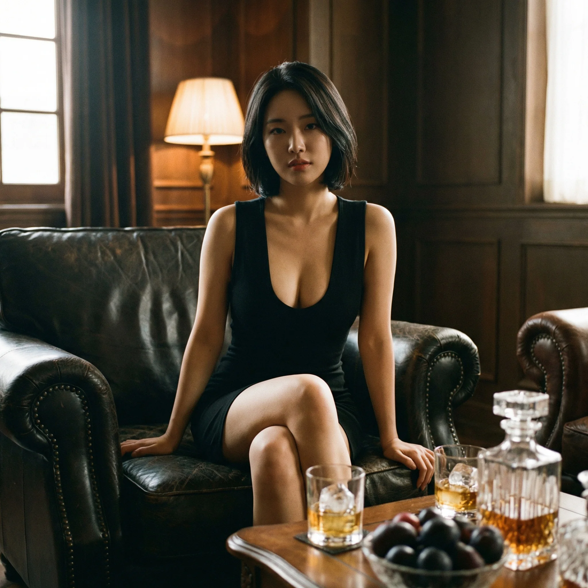

강남 룸싸롱, 제대로 알고 계신가요?
강남 지역 유흥업소는 단순히 '룸싸롱'이라는 하나의 카테고리로 묶을 수 없습니다. 업계에서는 명확한 등급 체계가 존재하며, 각 등급마다 가격대, 서비스 수준, 이용 목적이 완전히 다릅니다. 저는 이 업계에서 8년 넘게 실무를 담당하면서 수천 팀의 고객을 직접 응대해왔습니다. 그 과정에서 가장 많이 받은 질문이 바로 "텐프로와 쩜오가 뭐가 다른가요?"였습니다. 인터넷에는 부정확한 정보가 넘쳐나고, 업소마다 자기네가 최고라고 광고하지만, 실제로는 명확한 기준과 차이가 존재합니다.
이 글에서는 강남 룸싸롱의 모든 등급을 투명하게 공개합니다. 텐프로(상위 1%), 텐카페, 쩜오(비즈니스 표준), 하이퍼블릭(가성비)까지, 각 등급의 정확한 기준과 차이점을 설명드리겠습니다. 또한 가격 구조, 초이스 시스템, 예약 방법 등 실무에서만 알 수 있는 디테일까지 모두 담았습니다. 이 정보는 제가 현장에서 직접 확인하고 경험한 내용을 바탕으로 작성되었으며, 과장이나 허위 정보는 일절 없습니다.
특히 비즈니스 접대를 준비하시는 분들, 또는 처음 강남 룸싸롱을 이용하시는 분들께 실질적인 도움이 될 것입니다. 예산에 맞는 등급을 선택하고, 내상 없이 만족스러운 경험을 하실 수 있도록 정확한 기준과 선택 가이드를 제공합니다. 궁금하신 점이 있으시다면 언제든 전화 상담으로 문의해주세요. 정찰제로 운영되므로 투명한 견적 안내가 가능합니다.
강남 룸싸롱 등급 체계 완전 분석
등급 피라미드 구조
강남 지역 룸싸롱은 크게 4개 등급으로 나뉩니다. 이 구조는 업계 내부에서 오랜 시간 자연스럽게 형성된 것이며, 가격대와 서비스 수준에 따라 명확히 구분됩니다. 가장 상위 1%를 차지하는 텐프로, 그 아래 프리미엄급인 텐카페, 비즈니스 접대의 표준이 되는 쩜오, 그리고 가성비를 중시하는 하이퍼블릭과 퍼블릭까지. 각 등급은 단순히 가격만 다른 것이 아니라, 인테리어 수준, 파트너 퀄리티, 서비스 디테일, 주류 브랜드, 안주 구성 등 모든 면에서 차이가 납니다.
등급별 핵심 차이점
많은 분들이 "가격만 다른 거 아닌가?"라고 생각하시는데, 실제로는 완전히 다른 경험을 제공합니다. 텐프로 업소의 경우, 입구부터 다릅니다. 일반 건물 입구가 아닌 전용 엘리베이터나 별도 출입구를 사용하며, 프라이빗이 철저히 보장됩니다. 룸 크기도 최소 15평 이상이고, 인테리어는 특급 호텔 스위트룸 수준입니다. 주류도 프리미엄 브랜드만 사용하며, 안주는 전문 셰프가 직접 조리합니다. 파트너의 경우, 외모는 물론 매너와 대화 수준까지 검증된 분들만 근무합니다.
반면 쩜오 등급은 '비즈니스 표준'이라고 불리는 이유가 있습니다. 가격 대비 가장 안정적인 서비스를 제공하며, 대부분의 비즈니스 접대가 이 등급에서 이루어집니다. 룸 크기는 8~12평 정도이고, 인테리어는 깔끔하고 모던한 스타일입니다. 주류는 양주 기본 1병에 맥주 무제한이 일반적이며, 안주도 3~4종이 제공됩니다. 파트너도 일정 수준 이상이 보장되며, 재방문율이 높은 편입니다. 정확한 가격은 전화 상담을 통해 인원과 요일에 맞춰 최저가로 안내해드립니다.
하이퍼블릭은 가성비를 중시하는 고객층을 위한 등급입니다. 초이스 시스템은 동일하게 운영되지만, 룸 크기가 작고(6~8평), 인테리어가 심플합니다. 주류는 양주 대신 위스키나 맥주 중심이며, 안주도 2~3종 정도입니다. 하지만 친구들끼리 가볍게 즐기거나, 예산이 제한적인 경우에는 충분히 만족스러운 선택지가 됩니다. 예산에 맞는 최저가 견적은 전화 상담으로 확인 가능합니다.
텐프로 - 강남 최상위 1% 등급의 모든 것
텐프로란 무엇인가?
텐프로(10 Pro)는 말 그대로 '10점 만점에 10점짜리 프로페셔널'을 의미합니다. 강남 지역 전체 룸싸롱 중 상위 1%만이 이 등급에 해당하며, 업계에서도 인정받는 최고급 업소들입니다. 이곳을 이용하는 고객층은 주로 대기업 임원, 재벌가, 유명 인사들이며, 철저한 프라이빗과 최상급 서비스가 보장됩니다. 정확한 가격은 선택하는 주류와 이용 시간에 따라 달라지며, 전화 상담을 통해 최저가로 안내해드립니다.
텐프로 업소의 가장 큰 특징은 '완벽한 프라이빗'입니다. 일반 건물 입구를 사용하지 않고, 지하 주차장 전용 엘리베이터나 별도 VIP 출입구를 통해 입장합니다. 엘리베이터 내부에도 CCTV가 없으며, 복도에서 다른 손님과 마주칠 일도 거의 없습니다. 룸 배정도 미리 예약 시 알려주며, 웨이터가 직접 안내합니다. 룸 내부는 방음이 완벽하고, 프라이빗 화장실이 딸려있는 경우도 많습니다. 이 정도 수준의 보안과 프라이빗은 다른 등급에서는 찾아볼 수 없습니다.
텐프로 인테리어 & 시설
룸 크기는 최소 15평에서 30평까지 다양하며, 인테리어는 특급 호텔 스위트룸을 연상시킵니다. 천장 높이가 3미터 이상으로 개방감이 있고, 간접조명과 LED 무드등으로 고급스러운 분위기를 연출합니다. 소파는 이탈리아산 정품 가죽 소파이며, 테이블은 대리석이나 원목을 사용합니다. 오디오 시스템도 프리미엄 브랜드(보스, 하만카돈 등)를 사용하여 음질이 뛰어납니다. 일부 룸에는 프라이빗 바(Bar)가 설치되어 있어, 칵테일을 직접 만들 수도 있습니다.
화장실도 룸 내부에 전용으로 있는 경우가 많으며, 고급 어메니티(딥티크, 조말론 등)가 비치되어 있습니다. 수건도 호텔급 린넨을 사용하며, 항상 깨끗하게 관리됩니다. 냉장고에는 고급 생수(에비앙, 페리에), 탄산수, 과일이 준비되어 있습니다. 이 모든 것이 추가 비용 없이 기본으로 제공됩니다. 실제로 텐프로를 경험한 고객들은 "호텔 스위트룸보다 낫다"는 평가를 하곤 합니다.
텐프로 주류 & 안주
주류는 기본이 프리미엄 양주입니다. 조니워커 블루라벨, 맥켈란 18년, 발렌타인 30년 등이 기본 라인업이며, 요청 시 더 높은 등급도 가능합니다. 와인도 고급 라인(샤토 마고, 오퍼스원 등)이 준비되어 있고, 샴페인(돔페리뇽, 크리스탈)도 선택 가능합니다. 맥주는 하이네켄, 기린 등 수입 맥주가 무제한 제공됩니다. 칵테일도 전문 바텐더가 직접 조제하여 제공하며, 모히또, 마티니 등 클래식 칵테일부터 시즌 스페셜까지 다양합니다.
안주는 전문 셰프가 직접 조리하며, 메뉴도 일반 룸싸롱과는 차원이 다릅니다. 기본 안주로 제공되는 것만 해도 치즈 플래터(수입 치즈 5~7종), 과일 플래터(제철 과일 및 수입 과일), 육회 또는 육사시미, 랍스터 또는 킹크랩, 스테이크, 파스타, 초밥 등입니다. 양도 푸짐하며, 맛도 웬만한 고급 레스토랑 수준입니다. 추가 안주도 메뉴판이 따로 있으며, 원하는 것을 주문할 수 있습니다.
텐프로 파트너 수준
텐프로의 파트너는 단순히 외모만 뛰어난 것이 아닙니다. 물론 외모도 상위 1% 수준이지만, 그보다 중요한 것은 매너와 대화 수준입니다. 대부분 대학 재학 이상의 학력을 가지고 있으며, 비즈니스 접대 경험이 풍부합니다. 고객이 대기업 임원이나 전문직인 경우가 많기 때문에, 대화 주제도 정치, 경제, 문화 등 다양한 분야를 커버할 수 있어야 합니다. 또한 고객의 니즈를 빠르게 파악하고, 적절한 타이밍에 서비스를 제공하는 센스도 중요합니다.
초이스 시스템은 '로테이션' 방식입니다. 파트너 5~8명이 룸 안으로 들어와 짧게 인사를 나누고, 고객이 마음에 드는 분을 선택하는 방식입니다. 텐프로의 경우, 초이스 라인에 나오는 파트너들의 평균 수준이 매우 높기 때문에, 사실상 누구를 선택해도 만족도가 높습니다. 외모, 스타일, 분위기가 모두 다르기 때문에, 고객의 취향에 맞는 분을 선택하면 됩니다. 재방문 시에는 '지명' 시스템도 가능합니다.
텐프로 이용 시 주의사항
텐프로는 최고급 등급인 만큼, 이용 에티켓도 중요합니다. 술에 과하게 취하거나, 파트너에게 무례한 행동을 하는 경우 퇴장 조치될 수 있습니다. 또한 예약 없이 방문하면 입장이 거부될 수 있으므로, 반드시 사전 예약이 필요합니다. 예약 시에는 인원수, 원하는 룸 타입, 주류 선호도, 특별 요청사항 등을 미리 알려주는 것이 좋습니다. 결제는 현금 또는 법인카드가 가능하며, 세금계산서 발행도 가능합니다(업소에 따라 다름). 정찰제로 운영되므로, 예약 시 정확한 견적을 받을 수 있습니다.
쩜오 - 비즈니스 접대의 표준
쩜오가 가장 많은 이유
강남 지역 룸싸롱 중 가장 많은 비중을 차지하는 것이 바로 쩜오 등급입니다. 전체 업소의 60% 이상이 이 등급에 해당하며, 가장 안정적인 수요를 보입니다. 그 이유는 명확합니다. 가격 대비 서비스 만족도가 가장 높고, 비즈니스 접대에 적합한 수준을 유지하기 때문입니다. 전화 상담을 통해 인원과 요일에 맞는 최저가 견적을 받으실 수 있으며, 이 가격대는 대부분의 기업 접대비 예산 내에서 해결 가능합니다. 또한 업소 수가 많아서 예약도 비교적 수월하고, 지역별로 선택의 폭이 넓습니다.
저희가 응대하는 고객의 70% 이상이 쩜오 등급을 선택합니다. 중소기업 대표, 중견기업 부장급 이상, 자영업자, 전문직 등 다양한 고객층이 이용합니다. 접대 목적도 다양한데, 거래처 미팅, 프로젝트 마무리 회식, 신규 바이어 접대, 중요 계약 체결 후 자축 등입니다. 쩜오는 이런 목적에 딱 맞는 등급입니다. 합리적인 가격에 체면을 지킬 수 있고, 서비스 수준도 일정 이상 보장되기 때문입니다.
쩜오 가격 안내
가격 구조 설명
기본 2시간 코스 기준이며, 다음이 포함됩니다:
- 기본 주류: 양주 1병 또는 맥주 무제한
- 기본 안주: 3~4종
- 룸 사용료
- 서비스 차지
- 파트너 배정: 1:1 매칭
추가 비용 항목
- 시간 연장: 1시간 단위
- 주류 추가: 브랜드별 차이
- 안주 추가: 메뉴판 참고
- 지명료: 재방문 시
정확한 금액은 전화 상담으로 바로 안내해 드립니다. 정찰제 운영으로 투명한 가격 정책을 유지합니다.
쩜오 초이스 시스템 상세
쩜오의 초이스 시스템은 대부분 '로테이션' 방식입니다. 입실 후 10~15분 정도 지나면, 웨이터가 "초이스 준비되었습니다"라고 알려줍니다. 그러면 파트너 5~7명이 한 명씩 또는 2~3명씩 룸 안으로 들어와 간단히 인사를 나눕니다. 이 과정은 약 5분 정도 소요되며, 고객은 이 중에서 마음에 드는 분을 선택합니다. 선택 방법은 웨이터에게 번호를 말하거나, 직접 손짓으로 알려주면 됩니다.
초이스 시 주의할 점이 몇 가지 있습니다. 첫째, 외모만 보지 말고 분위기와 매너도 체크하세요. 파트너마다 스타일이 다르기 때문에, 본인의 취향이나 그날의 목적(비즈니스 접대 vs 친구 모임)에 맞는 분을 선택하는 것이 중요합니다. 둘째, 첫 로테이션에서 마음에 드는 분이 없으면, 재초이스를 요청할 수 있습니다. 보통 1~2회 정도는 무료로 가능하며, 그 이상은 추가 비용이 발생할 수 있습니다. 셋째, 파트너와의 대화에서 너무 사적인 질문(나이, 사는 곳, 연락처 등)은 피하는 것이 좋습니다. 비즈니스적인 관계를 유지하는 것이 서로에게 편합니다.
재방문 시에는 지명 시스템을 이용할 수 있습니다. 이전에 만났던 파트너가 기억에 남았다면, 예약 시 담당자에게 이름이나 특징을 말씀해주세요. 해당 파트너가 출근하는 날짜와 시간을 확인해드리고, 가능하면 지명 예약을 도와드립니다. 지명 예약을 하면 초이스 과정 없이 바로 해당 파트너가 배정되므로, 시간도 절약되고 편리합니다.
쩜오 예약 & 이용 팁
쩜오를 처음 이용하시는 분들을 위한 실전 팁을 드리겠습니다. 먼저, 예약은 필수입니다. 특히 주말(금요일, 토요일)이나 공휴일 전날은 예약 없이 가면 대기 시간이 1시간 이상 걸릴 수 있습니다. 평일이라도 저녁 8~10시 사이 피크타임에는 예약이 권장됩니다. 예약 시에는 인원수, 방문 시간, 예산, 특별 요청사항을 미리 알려주세요. 그러면 담당자가 적합한 룸을 배정하고, 정확한 견적을 안내해드립니다.
입실 후에는 웨이터가 주류와 안주를 선택할 수 있도록 메뉴판을 보여줍니다. 양주를 선택할 경우, 브랜드에 따라 가격이 다르므로 미리 확인하세요. 일반적으로 조니워커 레드/블랙, 임페리얼, 윈저 등이 기본 라인업이며, 블루라벨이나 로얄살루트 같은 고급 브랜드는 추가 비용이 큽니다. 맥주 무제한을 선택하면 양주 없이도 이용 가능하며, 가격이 약간 저렴합니다. 안주는 기본 3~4종이 나오지만, 추가로 주문할 수도 있습니다. 인기 메뉴는 과일, 육회, 회, 치킨 등입니다.
💎 정확한 견적 상담을 받아보세요
인원, 예산, 원하시는 등급을 말씀해주시면
딱 맞는 업소와 최저가 가격을 안내해드립니다
하이퍼블릭 & 퍼블릭 - 가성비 최강 선택
퍼블릭 계열의 특징
하이퍼블릭과 퍼블릭은 가성비를 중시하는 고객층을 위한 등급입니다. 텐프로나 쩜오에 비해 가격이 저렴하지만, 기본적인 시스템은 동일하게 운영됩니다. 초이스 시스템도 로테이션 방식이고, 파트너 배정도 1:1로 이루어집니다. 다만 룸 크기가 작고(6~8평), 인테리어가 심플하며, 주류와 안주 구성이 간소합니다. 정확한 가격은 전화 상담으로 최저가 견적을 받으실 수 있으며, 친구들끼리 부담 없이 즐기거나 예산이 제한적인 경우에 좋은 선택입니다.
하이퍼블릭은 퍼블릭의 업그레이드 버전입니다. 퍼블릭보다 파트너 퀄리티가 약간 높고, 안주 구성도 조금 더 나은 편입니다. 특히 역삼동, 선릉역 인근에는 하이퍼블릭 업소가 많이 분포하고 있으며, 직장인들의 회식이나 가벼운 모임 장소로 인기가 높습니다. 주말보다는 평일 이용률이 높은 편이며, 20~30대 고객층이 주를 이룹니다.
퍼블릭 계열 가격 안내
가격 구조 설명
기본 2시간 코스에 다음이 포함됩니다:
- 기본 주류: 맥주 무제한 또는 위스키 1병
- 기본 안주: 2~3종
- 룸 사용료
- 서비스 차지
- 파트너 배정: 1:1 매칭
추가 비용 항목
- 시간 연장: 1시간 단위 (쩜오보다 저렴)
- 주류 추가: 맥주는 무제한이므로 추가 비용 없음
- 안주 추가: 메뉴별 차이
- 지명료: 업소별 차이
정확한 금액은 전화 상담으로 바로 안내해 드립니다.
퍼블릭 계열 이용 시 주의사항
퍼블릭 계열을 이용할 때는 기대치를 적절히 조정하는 것이 중요합니다. 텐프로나 쩜오와 같은 수준의 인테리어나 서비스를 기대하면 실망할 수 있습니다. 하지만 가격 대비 만족도는 결코 낮지 않습니다. 룸이 작고 심플하더라도, 깨끗하게 관리되며, 기본적인 편의시설은 모두 갖춰져 있습니다. 파트너도 등급에 맞는 수준이 배정되며, 친절하고 밝은 분위기를 유지합니다.
가격 투명성 & 정찰제 운영
왜 정찰제가 중요한가?
유흥업소 이용 시 가장 큰 불안 요소는 '가격'입니다. 인터넷에는 저렴한 가격을 광고하지만, 실제로 가보면 추가 비용이 많이 발생하는 경우가 많습니다. 또는 예약 시 들었던 가격과 계산서의 금액이 다른 경우도 있습니다. 이런 경험을 한 고객들은 다시는 이용하지 않게 되고, 업계 전체에 대한 신뢰도 떨어뜨립니다. 저희는 이런 문제를 해결하기 위해 정찰제를 도입했습니다.
정찰제란, 예약 시 안내드린 가격이 그대로 최종 계산 금액이 되는 시스템입니다. 숨겨진 비용이나 추가 차지가 일절 없습니다. 인원수, 이용 시간, 주류 선택, 안주 구성을 미리 정하면, 정확한 견적을 알려드립니다. 실제 이용 후 계산 시에도 그 금액 그대로입니다. 단, 고객이 추가로 주류나 안주를 주문하거나, 시간을 연장한 경우에만 추가 비용이 발생하며, 이것도 사전에 동의를 구합니다. 이 시스템 덕분에 저희 재방문율은 78%에 달합니다(자체 조사 기준).
예약 시 견적 상담 프로세스
전화 상담을 주시면, 다음 정보를 여쭤봅니다: 1) 인원수, 2) 방문 날짜와 시간, 3) 희망 예산 또는 등급(텐프로/쩜오/퍼블릭), 4) 주류 선호도(양주/맥주), 5) 특별 요청사항(지명, 룸 크기 등). 이 정보를 바탕으로 적합한 업소를 추천드리고, 최저가 가격을 안내해드립니다.
또한 요일별 프로모션이나 할인 이벤트가 있는 경우, 그것도 안내해드립니다. 예를 들어, 평일 오후 6시 이전 입장 시 할인, 생일 당일 방문 시 샴페인 서비스 등입니다. 이런 정보는 직접 전화 상담을 통해서만 확인 가능합니다.
초이스 시스템 완벽 가이드
초이스란 무엇인가?
초이스는 강남 룸싸롱의 핵심 시스템입니다. 고객이 직접 마음에 드는 파트너를 선택할 수 있는 과정을 말합니다. 이 시스템이 있기 때문에, 룸싸롱은 단순한 술집이 아니라 '프리미엄 엔터테인먼트 공간'으로 분류됩니다. 초이스 방식은 크게 두 가지로 나뉩니다: 로테이션(Rotation) 방식과 라인업(Line-up) 방식. 대부분의 업소는 로테이션 방식을 사용하며, 일부 대형 업소나 텐프로급에서는 라인업 방식을 사용하기도 합니다.
로테이션 방식은 파트너가 5~8명씩 룸 안으로 순차적으로 들어와 간단히 인사를 나누는 방식입니다. 각 파트너는 약 30초~1분 정도 룸 안에 머무르며, 자기소개를 하거나 가볍게 대화를 나눕니다. 고객은 이 과정을 지켜보면서 마음에 드는 분을 선택합니다. 선택 방법은 웨이터에게 번호를 말하거나, 손짓으로 알려주면 됩니다. 보통 1~2분 안에 결정하시면 되며, 너무 오래 고민하실 필요는 없습니다.
초이스 시 체크 포인트
초이스는 단순히 외모만 보고 선택하는 것이 아닙니다. 물론 외모도 중요하지만, 그날의 목적과 분위기에 맞는 파트너를 선택하는 것이 더 중요합니다. 비즈니스 접대라면, 대화를 잘 이끌고 분위기를 부드럽게 만들어줄 수 있는 분이 좋습니다. 친구들끼리 놀러 왔다면, 밝고 활발한 분위기의 파트너가 좋습니다. 조용히 술을 마시고 싶다면, 조용하고 차분한 스타일의 파트너가 적합합니다.
초이스 후 분위기 만들기
초이스가 끝나고 파트너가 배정되면, 본격적인 시간이 시작됩니다. 처음에는 어색할 수 있지만, 파트너가 먼저 대화를 이끌어주므로 크게 걱정하지 않으셔도 됩니다. "오늘 무슨 일로 오셨어요?", "회사 어디세요?", "평소에 자주 오세요?" 같은 가벼운 질문으로 시작합니다. 여기서 자연스럽게 대화가 풀리면서 분위기가 편안해집니다.
주의할 점은 파트너에게 너무 사적인 질문을 하거나, 연락처를 요구하는 것은 피해야 한다는 것입니다. 이것은 업계의 암묵적인 규칙이며, 이를 어기면 분위기가 어색해질 수 있습니다. 또한 과도하게 술을 권하거나, 신체 접촉을 시도하는 것도 금물입니다. 서로 존중하는 선에서 즐기는 것이 가장 좋습니다.
🎯 맞춤 상담으로 딱 맞는 업소 찾기
텐프로? 쩜오? 퍼블릭? 어떤 등급이 맞는지 고민되시나요?
전화 주시면 예산과 목적에 맞는 최적의 선택을 도와드립니다
강남 지역별 룸싸롱 분포 가이드
역삼동 - 쩜오 밀집 지역
역삼동은 강남 룸싸롱의 메카입니다. 특히 르네상스 사거리, 역삼역 1번 출구 인근, GS타워 주변에 쩜오 등급 업소가 밀집해 있습니다. 이 지역의 특징은 업소 수가 많고, 경쟁이 치열해서 서비스 수준이 높다는 점입니다. 대부분 빌딩 5층 이상에 위치하며, 전용 엘리베이터나 별도 출입구를 사용합니다. 주차는 건물 지하 주차장을 이용하거나, 발렛 파킹 서비스를 제공하는 곳도 있습니다.
역삼동의 장점은 접근성이 좋다는 것입니다. 지하철 2호선 역삼역에서 도보 5분 이내이고, 강남역이나 선릉역에서도 가깝습니다. 대리운전도 쉽게 잡을 수 있어서 편리합니다. 예약 시 정확한 위치와 최저가 견적을 안내해드립니다.
선릉역 - 퍼블릭 & 하이퍼블릭 상권
선릉역 인근, 특히 먹자골목 일대는 하이퍼블릭과 퍼블릭 업소가 많이 분포합니다. 이 지역의 특징은 가성비가 뛰어나다는 점입니다. 전화 상담으로 최저가 견적을 받으실 수 있으며, 직장인 회식이나 친구 모임 장소로 인기가 높습니다. 대부분 건물 3~4층에 위치하며, 규모는 쩜오보다 작지만 깨끗하게 관리됩니다.
선릉역 퍼블릭의 장점은 예약 없이도 이용 가능한 경우가 많다는 것입니다. 평일 저녁에는 비교적 여유가 있어서, 당일 방문해도 대기 시간이 짧습니다. 물론 주말에는 예약이 권장됩니다.
청담동 - 하이엔드 & 텐프로급
청담동은 강남에서도 가장 고급스러운 지역입니다. 이곳에는 텐프로급 업소가 많이 위치하며, 대기업 임원이나 재벌가들이 주로 이용합니다. 일반 고객이 찾기는 쉽지 않고, 대부분 단골 고객이나 소개로만 입장이 가능합니다. 가격은 최상위 등급이지만, 그만큼 프라이빗과 서비스가 완벽하게 보장됩니다.
강남역 - 가라오케 & 복합 상권

강남역 인근은 룸싸롱보다는 가라오케와 하이퍼블릭이 주를 이룹니다. 젊은 층이 많이 찾는 지역이라 분위기도 더 활기차고, 가격도 합리적인 편입니다. 강남역의 장점은 접근성이 매우 좋다는 것입니다. 지하철 2호선, 신분당선이 교차하고, 버스 노선도 많아서 어디서든 쉽게 올 수 있습니다.
예약 & 이용 완벽 매뉴얼
예약 전화 시 꼭 말해야 할 것들
예약 전화를 하실 때는 다음 정보를 미리 준비하시면 상담이 빠르고 정확합니다. 첫째, 인원수입니다. 총 몇 명이 방문하는지 알려주세요. 인원에 따라 룸 크기와 가격이 달라집니다. 둘째, 방문 날짜와 시간입니다. 평일인지 주말인지, 몇 시에 입장 예정인지 알려주세요. 셋째, 희망 예산 또는 등급입니다. "예산 내에서" 또는 "쩜오 등급으로"라고 말씀해주시면 됩니다.
넷째, 주류 선호도입니다. 양주를 선호하시는지, 맥주 무제한을 선호하시는지 알려주세요. 다섯째, 특별 요청사항입니다. 예를 들어 "지명하고 싶은 파트너가 있어요", "큰 룸으로 배정해주세요", "조용한 분위기 선호합니다" 같은 것들입니다. 이 정보를 바탕으로 담당자가 가장 적합한 업소와 룸을 추천해드리고, 최저가 견적을 안내해드립니다.
입장부터 퇴장까지 전 과정
예약 시간에 맞춰 업소에 도착하시면, 입구 또는 엘리베이터 홀에서 웨이터가 맞이합니다. 신분증 확인은 대부분 하지 않지만, 일부 업소는 나이 확인을 위해 요청할 수 있습니다. 웨이터가 예약 확인 후, 배정된 룸으로 안내합니다. 룸에 들어가면 소파에 앉으시고, 웨이터가 메뉴판을 보여줍니다. 주류와 안주를 선택하시면, 10분 정도 후에 테이블 세팅이 완료됩니다.
주류와 안주가 나온 후 10~15분 정도 지나면, 초이스가 시작됩니다. 웨이터가 "초이스 준비되었습니다"라고 알려주고, 파트너들이 로테이션으로 들어옵니다. 마음에 드는 분을 선택하시면, 해당 파트너가 배정되어 자리에 앉습니다. 이후 기본 코스 시간 동안 대화를 나누고, 술을 마시고, 노래를 부르면서 시간을 보냅니다. 파트너가 분위기를 리드해주므로, 편하게 즐기시면 됩니다.
기본 코스가 끝나갈 무렵, 웨이터가 "연장하시겠습니까?"라고 물어봅니다. 시간이 더 필요하시면 연장하시고, 충분하시면 "계산해주세요"라고 말씀하시면 됩니다. 계산서를 확인하시고, 현금 또는 카드로 결제합니다. 영수증을 받으시고, 웨이터가 엘리베이터까지 배웅해줍니다. 대리운전이 필요하시면, 웨이터에게 요청하시면 바로 불러줍니다.
자주 묻는 질문 (FAQ)
💬 더 궁금하신 점이 있으신가요?
8년 경력 전문 상담사가 모든 질문에 정확하게 답변해드립니다
예약부터 이용까지 완벽하게 케어해드립니다
마지막 조언 - 내상 없는 선택을 위한 체크리스트
예산에 맞는 등급 선택이 가장 중요합니다
많은 분들이 무리해서 높은 등급을 선택했다가 부담을 느끼는 경우가 있습니다. 텐프로가 최고이긴 하지만, 모든 상황에 적합한 것은 아닙니다. 본인의 예산에 맞는 등급을 선택하는 것이 가장 만족도가 높습니다. 무리하게 높은 등급을 선택하면 추가 비용에 부담을 느끼고, 편하게 즐기지 못하게 됩니다. 전화 상담으로 예산에 맞는 최저가 견적을 받으시고 결정하세요.
정찰제 운영 업소를 선택하세요
인터넷에는 비현실적으로 저렴한 가격을 광고하는 곳들이 많습니다. 하지만 실제로 가보면 추가 비용이 많이 발생하거나, 서비스 수준이 낮은 경우가 대부분입니다. 반드시 정찰제를 운영하는 업소를 선택하시고, 예약 시 정확한 견적을 받으세요. 견적서에 포함된 항목을 확인하고, 추가 비용이 발생하는 경우도 미리 확인하세요. 투명한 가격 정책을 가진 업소가 재방문율도 높고, 고객 만족도도 높습니다.
예약 시 솔직하게 상담하세요
예약 전화를 할 때, 본인의 상황을 솔직하게 말씀해주세요. "처음 이용합니다", "예산이 제한적입니다", "비즈니스 접대용입니다" 같은 정보를 주시면, 담당자가 더 정확한 추천을 해드릴 수 있습니다. 또한 특별한 요청사항도 미리 알려주시면 반영해드립니다. 솔직한 상담이 가장 만족스러운 결과를 만듭니다.
파트너에 대한 기대치를 적절히 조정하세요
초이스 시스템이 있다고 해서, 모든 파트너가 본인의 이상형일 수는 없습니다. 외모는 주관적인 영역이므로, 너무 높은 기대치를 갖지 마세요. 대신 매너, 대화 수준, 분위기 등 전체적인 서비스 경험에 초점을 맞추시면 만족도가 높아집니다. 또한 파트너도 사람이므로, 존중하는 태도로 대하시면 더 좋은 서비스를 받을 수 있습니다.
재방문 시 피드백을 주세요
첫 방문 후 만족하셨다면, 재방문 시 그 경험을 담당자에게 공유해주세요. 반대로 불만족스러운 부분이 있었다면, 그것도 솔직하게 말씀해주세요. 개선할 수 있는 부분은 최대한 반영하겠습니다. 고객의 피드백이 서비스 품질을 높이는 가장 중요한 요소입니다.
결론 - 강남 룸싸롱 완전 정복
이 글에서는 강남 룸싸롱의 모든 등급을 투명하게 분석했습니다. 텐프로(상위 1%), 텐카페, 쩜오(비즈니스 표준), 하이퍼블릭(가성비)까지, 각 등급의 정확한 기준과 차이점을 설명드렸습니다. 또한 가격 구조, 초이스 시스템, 예약 방법, 지역별 분포, 이용 팁까지 현장 경험을 바탕으로 상세히 정리했습니다. 이 정보는 제가 8년 동안 현장에서 직접 확인하고 수천 팀의 고객을 응대하면서 쌓은 노하우입니다.
가장 중요한 것은 본인의 예산과 목적에 맞는 등급을 선택하는 것입니다. 텐프로가 최고이긴 하지만, 모든 상황에 적합한 것은 아닙니다. 쩜오는 가격 대비 가장 안정적인 만족도를 제공하며, 하이퍼블릭은 가성비가 뛰어납니다. 어떤 등급을 선택하시든, 정찰제로 운영하는 업소를 선택하시고, 예약 시 정확한 견적을 받으세요. 그리고 파트너와 스태프에게 존중하는 태도를 유지하시면, 최상의 경험을 하실 수 있습니다.
궁금하신 점이 있거나, 예약을 원하시면 언제든 전화 주세요. 8년 경력 전문 상담사가 친절하게 안내해드립니다. 인원, 예산, 목적을 말씀해주시면, 딱 맞는 업소를 추천하고 최저가 견적을 알려드립니다. 저희는 투명한 가격 정책과 최상의 서비스로 고객 만족을 최우선으로 생각합니다. 강남 지역 최고의 경험을 약속드립니다.
🌟 지금 바로 상담받으세요
정확한 가격, 최적의 추천, 완벽한 예약 케어
8년 경력 전문가가 모든 것을 책임집니다